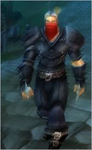
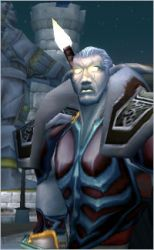

Récits Légendes de Kirin Tor Personnages Célébrités Guildes
Outils Calendrier Calendrier Illustré Mod d'interface
Informations Historiens FAQ Liens Crédits
Les légendes de Kirin Tor
Zapan
Mail : ==> Afficher les personnages de Zapan
Salazare
 Age : 30
Age : 30
Sexe : Homme
Race : Humain
Faction : Alliance
Formation : Voleur
Description : On dira de lui:
Il est cet homme un peu étrange, regardant par moment les autres l'air de se demander ou il est tombé...
Il cet homme parfois drôle, parfois las, parfois mélancolique, parfois en colère...
Il est ce séducteur, qui charme sans mal, tant par ses paroles que par son physique faussement négligé...
D'autre diront :
Il est cette ombre qui vous suit dans les rues sombres pour disparaitre dans un coin sans prévenir...
Il est cet oeil qui vous observe et calcule...
Il est cette oreille qui écoute quand on ne veut pas être entendu...
Il est la lame qui vous perce le poumon en silence pour vous empecher d'hurler...
En fin de compte, très peu de gens connaissent Salazare. On sait juste qu'il fut pirate ou corsaire, qu'il vient de Lordaeron, qu'il est perçu comme un coureur de jupon et que tuer ne lui pose en général pas de soucis...
Plus d'infos sur Salazare >>>
Lire les 11 récits de Salazare >>>
Arthémìs
Age : 25Sexe : Homme
Race : Humain
Faction : Alliance
Formation : Voleur
Description : Arthémìs est un jeune voleur au visage d'ange. Il cherche constament à améliorer ses talents ne recule devant aucun défi.
En lui parlant on se rendra compte qu'il à reçu une bonne éducation, et qu'il sait ce que sont les bonnes manières et la noblesse d'esprit.
Il sera pratiquement toujours accompagné d'une jeune guerriere, et lorsqu'ils ne sont pas en train de jouer au avanturiers, on les verra comme un jeune couple très amoureux.
Arthémìs, est aussi un peu poète, avec de la chance vous pourrez l'entendre chanter doucement a l'oreille de celle qu'il aime...
Plus d'infos sur Arthémìs >>>
Lire le récit de Arthémìs >>>
Norië
Age : InconnuSexe : Homme
Race : Elfe
Faction : Alliance
Formation : Guerrier
Description : Plus grand, plus colossal que la majorité des elfes, il n'y a pas de doutes, Norië est un guerrier.
Il est couvert de cicatrices et la plus visible sera cette balafre qui lui traverse le visage en diagonale sur toute sa longueur.
Norië n'engage jamais la conversation, il préfere être seul, et semble éviter tout contact physique avec les autres. Ses traits sont dur, séveres, mais laissent paraitre parfois une impression de tristesse.
Certain l'auront connu avant, mais depuis son retour des Maleterres il a perdu la mémoire et semble de plus en plus s'enfermer dans sa profonde solitude.
Sans pouvoir se l'expliquer les assassins, les meurtriers les plus cruels et impitoyable se sentent mal a l'aise en sa présence, comme si des milliers de regards remplis de repproches se posaient sur eux et les pointaient du doigts.
Norië parle avec un accent elfique tres prononcé, éprouves beaucoup de difficulté avec le commun, et ne semble pas s'interesser aux "détails" qui occuperont la majorité des gens...
Il fait penser à un guerrier, sauvage, dont la place n'est que dans une arène ou sur un champ de bataille.
Plus d'infos sur Norië >>>
Lire le récit de Norië >>>
==> Voir la galerie d'images de Zapan